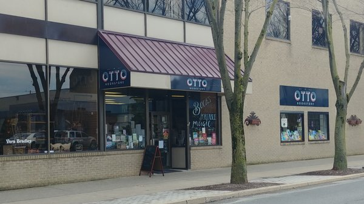

In downtown Williamsport we host a bunch of local shops that you can purchase things from and differetn markets as well, in this page you are going to be able to see what we have to offer:
At Otto's Book store you can find pretty much any book that you are looking for, whether it is new, old, used, damaged, or not, you could find pretty much any book there. The store its said that the bookstore started all the way in 1958, but also 1877, and with that a huge search began becuase they have even found dates way before that as well.
At Gustodian gifts you can find all homemade gifts ranging from clothing, to bags, to even jewlery. Everything in the store is all local, nothing is mass produced at all and all procceeds go back to the maker. A lot of the time when it comes to giveaways Otto's Bookstore and Gustodian Gifts colaborate together and give away prizes.
At Le Chocolat you are able to pick through their vast variety of different Chocolates, and also Barbecue Sauces, and Hot Sauces. This little shop located in dowtown Williamsport has been opened for about 27 years and is the definition of a mom and pop shop, especially in the heart of the city where the history lies.